Learning Goals
At the end of this Tutorial, you will be able to:
- Install the Brave or Google Chrome web browser as an alternative to Microsoft Edge or Apple Safari.
- Display and and dock the Developer Tools window.
- Work with the Elements tab in DevTools to edit text content, HTML tags and CSS styles in a web page.
About web browsers
A web browser is an app that gives you access to Internet-based content and services.
Default web browsers
Your laptop, desktop, tablet and phone come with a default web browser pre-installed:
- Microsoft Edge: This web browser is included with the Microsoft Windows operating system.
- Safari: This web browser is included in the macOS and iOS operating systems used on Apple computers, tablets and mobile phones.
Neither Microsoft Edge or Apple Safari are recommended for frontend development tasks.
Recommended web browsers for developers
Here are the two web browsers most commonly used by frontend designers and developers:
- Google Chrome: The most popular in the world, partly because it is pre-installed on Android phones.
- Brave: A privacy-focused web browser developed by Brendan Eich, creator of the JavaScript programming language.
Installing Brave
Both Brave and Google Chrome are based on the same open-source software code, so both work in a largely similar way and support almost all the same browser extensions.
But because Brave blocks ads and website trackers, it can run up to six times faster than Chrome. Follow these steps to download and install it.
- Use your current web browser to go to this web address: https://brave.com
- Click the button named Get Brave 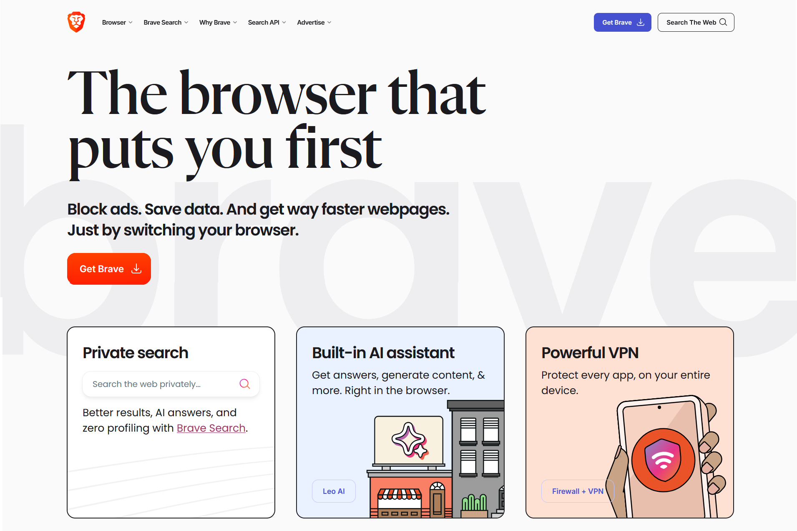 Brave will begin downloading the appropriate version for your computer and operating system. Follow the usual installation instructions.
Working with DevTools
DevTools (the short name for Developer Tools) are built into every web browser. This feature enables you to view and experiment with the content and code of web pages.
To open DevTools in your Chrome or Brave web browser:
- Windows: Press Ctrl and Shift and i
- Apple Mac: Press Command ⌘ and Option ⌥ and i.
Tip: Think letter i for inspect 👁
By default, the DevTools window will display at the left side of the web browser window. This is a good choice for working with JavaScript code.
For working with HTML content and CSS styles, however, a better option is to position or dock the DevTools window at the bottom of the web browser window.
Changing the DevTools position
To position or dock the DevTools window:
- Open the DevTools window.
- Near the top-right of the DevTools window, click the vertical ellipses (three dots) icon. 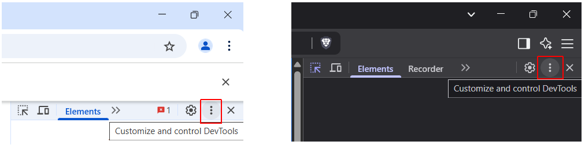
- Click the icon for your required docking position. 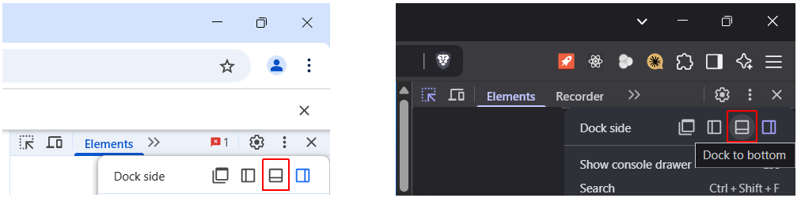
- By default, the Elements tab is displayed. If not, click on it. 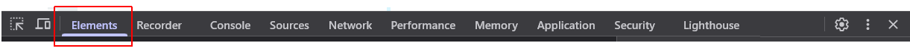
Now you can see the HTML code for the web page you are viewing. You can also see the CSS styles applied to each element in the page.
Closing the What's New pane
If you are using Google Chrome, a pane called What's New may display across the bottom of the DevTools window.
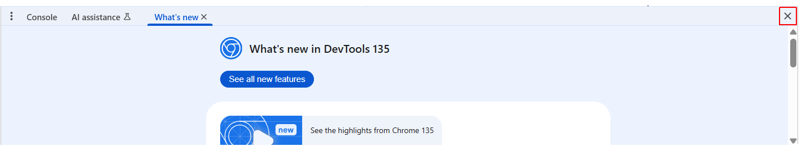You can close this to free up space on your screen.
Changing the DevTools font size
To change the font size in the DevTools window:
- Click anywhere in the DevTools window.
- Press the Ctrl key and the plus + or dash - key.
To reset, press Ctrl and 0.
Working with the Elements tab
The Elements tab of DevTools enables you to view and edit the text content, HTML tags and CSS styles of the web page you are viewing.
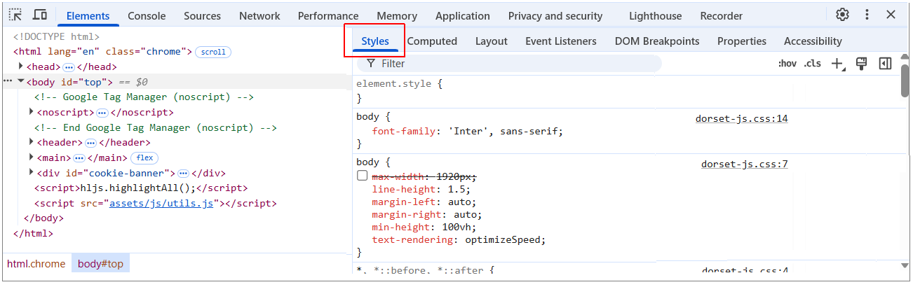You can drag the vertical divider between the two panes so that each fills about half of the DevTools window.
By default, the Styles tab is displayed in the right pane. If not, click on it.
Any changes you make are temporary and appear only in the current browser session.
The actual HTML and CSS files are unaffected.
You can use the Elements tab to:
- Identify which CSS styles control or target particular HTML elements of your web page. You can then edit those styles in the CSS stylesheet file, or add new styles to achieve the visual effect you want.
- Experiment with variations to content, HTML tags and CSS styles. If you are happy with a particular change, you can then update the relevant HTML or CSS stylesheet file.
Edit text content in DevTools
You can edit the content displayed on a web page without changing the source file.
- Display a web page in Chrome/Brave. For example, your page-4.html (Vincent van Gogh) sample page in your 📁 exercises folder.
- Display the Elements tab of DevTools.
- Click the arrow icon at the top left of the DevTools window. 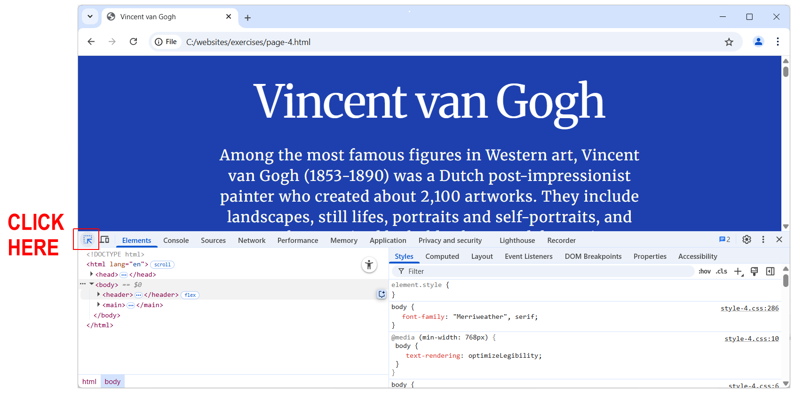
- In the main web browser window, hover over the text you want to edit.
- In the Elements tab of DevTools, double-click the text you want to edit. (Do not edit the HTML tag.) For a larger amount of text, you may need to click first on the expand arrow at the left of the HTML tag that surrounds the text. 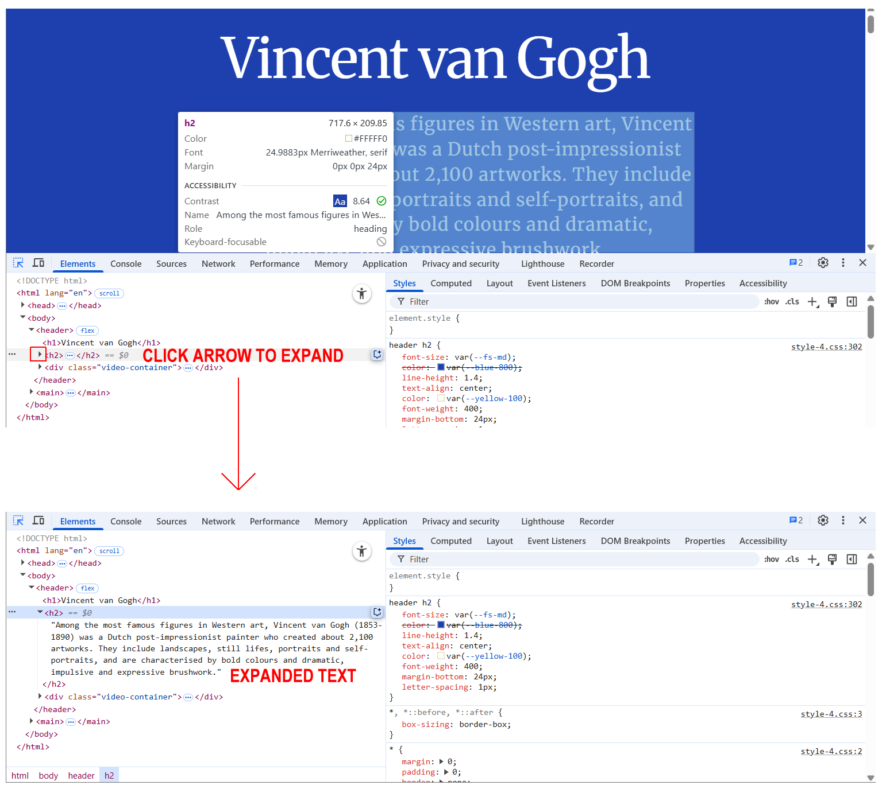
- Double-click directly on the text inside the Elements tab and edit it as required.
- When finished editing, press Enter. The web page now displays your text changes. 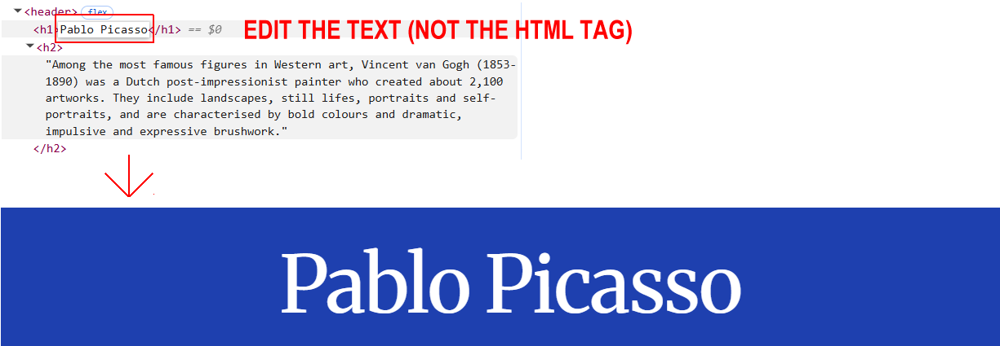
To no longer display the edited text, reload the web page in your browser.
Identify which CSS styles affect an element
Follow these steps to view which CSS styles control the appearance of a selected HTML element in a web page.
- In the Elements tab, click on an HTML element. For example, <h1> or <h2>.
- In the Styles pane, you can see the list of relevant CSS rules for the selected HTML element. 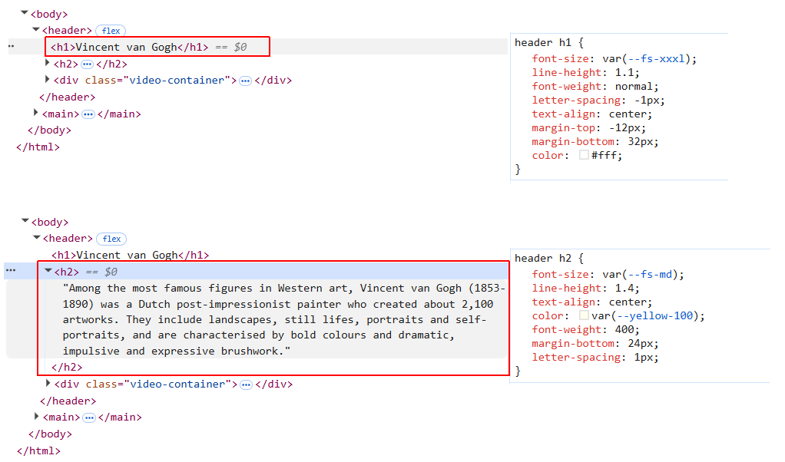
- To view the line number location of the styles in the source CSS stylesheet file, click the file name at the right of the Styles pane. 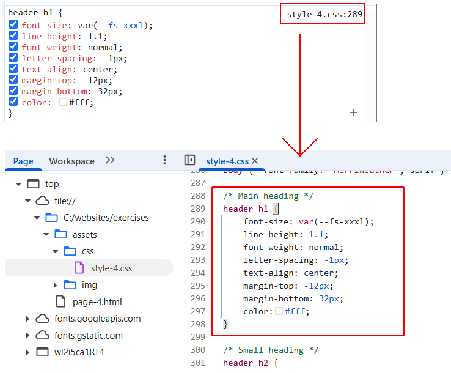 The Sources tab now replaces the Elements tab in the DevTools window.
Edit CSS styles in DevTools
To change CSS styles in DevTools, follow these steps.
- In the Elements tab, click on an HTML element. For example, <h1> or <h2>.
- In the Styles pane, you can see the list of relevant CSS rules for the selected HTML element.
- Click the value of a CSS property and edit it. Do not edit the name of the CSS property itself. 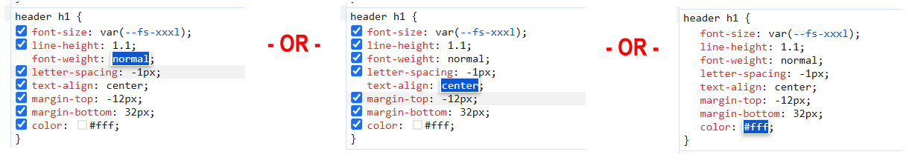
- When finished, press Enter.
You can see that the HTML element as displayed in the browser changes instantly.
To add a new CSS style rule:
- In the Styles pane, click on the same line as the closing curly brace } for the relevant CSS declaration block.
- At the left of the colon :, type the CSS property name and press the Tab key.
- At the right of the colon : type the CSS property value and press Enter. 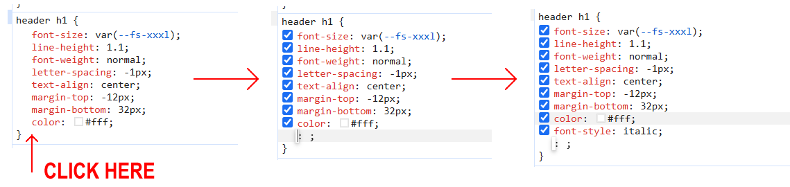
To restore the original CSS styles, reload the web page in your browser.